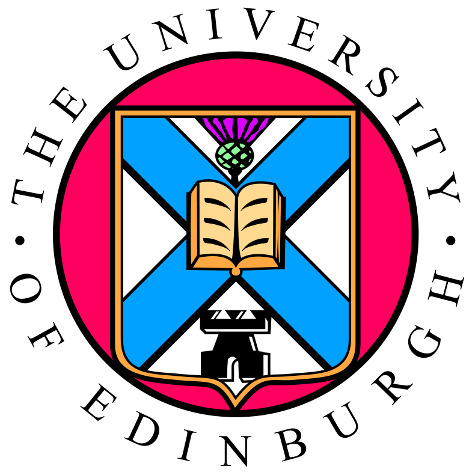

Podstata štúdie. Pozývame Vás k účasti na štúdii, ktorá zahŕňa nasledovanie hovorených pokynov. Budú Vám tiež položené otázky týkajúce sa Vašich skúseností s JAZYKOM. Vaša účasť môže trvať až 20 minút.
Riziká a prínosy. Z účasti na tejto štúdii pre Vás nevyplývajú žiadne známe riziká ani hmatateľné výhody.
Dôvernosť a použitie údajov. Nepožadujeme Vaše meno ani iné osobné údaje. Anonymné údaje zozbierané počas tejto štúdie budú použité iba na výskumné účely, v súlade so zákonom o ochrane údajov.
Právo na odstúpenie. Z tejto štúdie môžete kedykoľvek a z akéhokoľvek dôvodu odstúpiť. Ak odstúpite zo štúdie po zaznamenaní Vašich údajov, Vaše údaje vymažeme do dvoch týždňov od ukončenia štúdie, pokiaľ nám budete vedieť poskytnúť anonymné ID, ktoré Vám pridelíme. Za odstúpenie nebudete nijako penalizovaní.
Ak máte akékoľvek otázky k tomu, čo ste si práve prečítali, kontaktujte prosím Martin.Corley@ed.ac.uk pre viac informácií.
Zaškrtnutím políčka nižšie súhlasíte s nasledujúcim:
Súhlasím s účasťou na tejto štúdii.